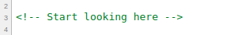
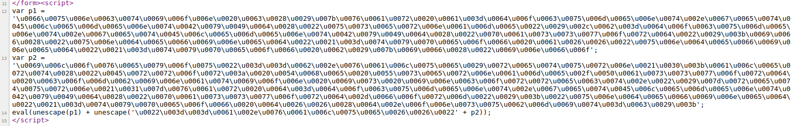
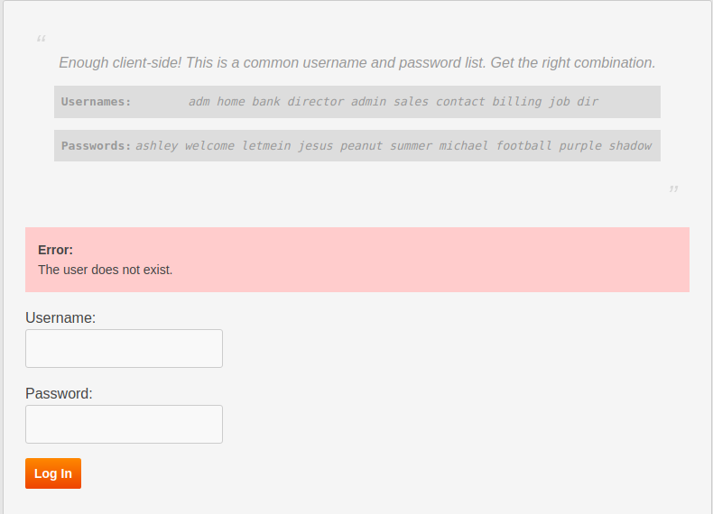

HackGame Walkthrough
Walkthrough of HackGame3, a browser-based web CTF.
Created on: 2020-02-02
Tag: ctf
From the HackGame3 homepage:
HackGame3 is a free, safe, legal, browser-based and timed game for hackers to test and expand their exploration skills.
I can't remember exactly where I did I get the HackGame3 site but I find it somewhere floating in the internet around a year ago and gave it a go. I went till level 6 both because till that it was very easy, just picking up the connections. I stopped at level 7 because it required some JavaScript and at that time I had zero understanding of JavaScript. It not like that now I know JavaScript so I am up for round 2. 😛 It's just that after finishing Bandit Walkthrough, I was going through my old notes and I found that I already wrote bits of how to pass form one level to another till level 7. From there I just picked up the old clues, organized them and tried to solve the next level with the help of my mate @nr072. So let's began!
Presequisite
We need a working internet, any modern browser like Google Chrome or Firefox and time.
Starting the game
To start the game, just visit HackGame3. We will see a big Start button with basic instructions bellow and a leaderboard on the right. Clicking on the Start button starts the game. Each level has a web page designated for it. The structure of the pages are same. Level heading, level hint, two input box for username and password and finally a Lasson larned section where it is said what should be done to remedy the problem. Remember that the game is time base, so time required to solve each level is recorded and the quicker the better.
Level 01
The clue for this level is Do you notice something in the URL? Try to access level 2 directly!. If we see the URL, we would see:
This is a screenshot of the URL bar of that level:

As the clue suggested we can change end of the URL form level1 to level2 and go to the next level.
Level 02
The clue for this level is Was level one too easy? Try again with something different!. Again, if we see the URL, we would see:
What would happen if we changed the logged to true from false?
As I said the beginning levels are too easy! We are in level 3.
Level 03
The clue for this level is Very good! Do you know some default username/password combinations?. I am sure everyone guessed it by now! Yes, it it admin, admin. Let's move on to Level 04
Level 04
The clue for this level is Do you know how to read source code?. That means we have to get the source of this page. IMO, the clean way to read code would be to view source. Press Ctrl + u to open current pages source code in new window.
In the source we could see comments along with the actual source code. One comment says Start looking here as we see in the screenshot:
Just under the comment we have a from that takes an username and password. If we skip that we would see one more comment that says TODO: Remove this comment before publishing. With that we would have our username and password as we see in the screenshot bellow:

Use this in the actual page to go to the next level.
Level 05
The clue for this level is Great job! Try it again!. So we will do the same as Level 04. We will view the source code with Ctrl + u where we would see the same Start looking here comment and bellow that comment we should see the login form. If we go a bit bellow we would see a script were a JavaScript function named checkSubmit. The function first gets the username and password from the page and then first check if it is undefined then if not it would check our input with a hard-coded username and password and return true if it matches or else returns false.
If we use this we would be able to go to the next level, Level 06.
P.S: For me, the novice in JavaScript, I wondered how did after from submission the from knew it had to run the checkSubmit function? Well, just after the check finises we see 3 more lines of code that gets the password-form element by ID and if it is not undefined then calls itself.

Level 06
On this levels page we get the clue for this level which is So, you look like a JavaScript expert. How about now?. That means we have to dig through source code again like the last time. If we see the code with Ctrl + u, we would see this:
As we can see we have two variables p1 and p2 with huge Unicode or hex value and at the last line it usages eval and unescape function to add another Unicode or hex value with with p2 then adds that to p1 and finally runs eval function on it.
What can we do? Well it is JS and we do have a console handy. Let's paste it! If we paste it we see the following:
We that looks similar. It's a minified JS function:
function c(){var a=document.getElementById("username"),b=document.getElementById("password");if("undefined"!=typeof a&&"undefined"!=typeof b){if("info"==a.value&&"iloveyou"==b.value)return!0;alert("Error: The Username/Password combination is incorrect.")}return!1}var d=document.getElementById("password-form");"undefined"!=typeof d&&(d.onsubmit=c);
And we have our credentials! March forward.
Level 07
The clue for this level is Are you bored? Play with this paradox. Use the same username and password of level six.. And the username and password filed is pre-filled with the credentials of Level 06. Let's click 'Log in'. Oh, well no luck! We get a console popup with Error: You cannot try to log in. But it said it we can use the username and password of previous level. Well it also said it is a paradox. If we see the source code like before, we would see this:
function checkSubmit() {
alert('Error: You cannot try to log in.');
return false;
}
var loginform = document.getElementById('password-form');
if ('undefined' != typeof loginform) {
loginform.onsubmit = checkSubmit;
}
See screenshot:
In this level the script has a function checkSubmit which gives an alert and returns false. The function is being called bellow if the from is not empty. Let's see what happens if we change the return value to ture and paste it in the console.
This time if we press 'Log in' we are moved to Level 08.
Level 08
The clue for this level is You have very solid client-side knowledge! Let me test your logic ability.. If we see the source code, we would see this:
We can see that we have a long function named pseudoHash which is being called from the last line with an hex value and a string named DECRYPT. The hasing algorithm seems to be a self invented hashing algorithm. The function pseudoHash takes two string one string of plain-text and a method name which either can be 'ENCRYPT' or 'DECRYPT' and returns a string. Now the encrypt part is given and from it we have to figure out a way to decrypt part. This is a reverse engineering problem so let's take apart the encrypt part first.
the encryption starts by defining a variable named output
then we start a for loop that starts from 0 and goes on step at a time until y, then length of string is not reached
- on each step of the for loop do the following
calculate the ASCII value of the character
if the ASCII value is less then 128; add 128 with the value
if the value is greater 127 then subtract 128 from the value
subtract the value from 255
now convert it into hex
if the length of hex is less the 2; add a leading 0
concat the hex code to the variable output
return the value
We know that we would get a hex value and the string DECRYPT but decrypt function is not implemented. Now to implement we need to do the exact opposite. Here is what we would do:
define a variable output
start a for loop that will start at 0, goes 2 step at a time until length of string is reached [two steps because we will get 2 bit hex as we see in 6th step inside the loop of encrypt function]
- on each step of the for loop we will do the following
take x to x+2 slice of string as hexcode
convert it to int
subtract the value from 255
if the ASCII value is less then 128; add 128 with the value
if the value is greater 127 then subtract 128 from the value
convert the int (ASCII) value to char and add concat it to the output variable
return the value
This is how the rough code will look like:
var output = ""
for (var x = 0, y = string.length, charCode, hexCode; x < y; x=x+2) {
hexCode = string.slice(x,x+2)
charCode = parseInt(hexCode, 16);
charCode = 255 - charCode;
if (128 > charCode) {
charCode += 128;
} else if (127 < charCode) {
charCode -= 128;
}
output = output + String.fromCharCode(charCode)
}
output
Remember the hex value that was called in the last line of the code? Define a variable named string with that value and paste the code in the console. We should get our password!
Level 09
The clue for this level is Enough client-side! This is a common username and password list. Get the right combination.. We are presented with a list of username and password pair and a combination of the is correct. Let's try the first pair and see what happens.
Huh? That error looks interesting! It say's The user does not exist. so before trying a correct user name and password pair let's find out out valid user first by trying the usernames only! And after a couple of try (it may vary as the user name and password list won't be same every time) we get another error.
This means our user exist and valid but the password is wrong so we try the other passwords until we have success. On successful combination` We count the password to that username number index and put the password to go to Level 10.
Note
I know the manual process of trying each user and then each password for the valid password is boring and a simple JS or Python script can solve it very easily. I just did it this way so that is what I wrote here. Someday I may includ a script for it. This applicable for the next few tasks.
Level 10
The clue for this level is This is still using the common username and password list, so get the right combination.. Not again! If we see the first pair, we would see:
Well this time we see a very generic message The username/password combination is incorrect. but the title of this lesson says Error Status Leak. HTTP response code may leak something. So let's check that. Open the browser console and switch to Network tab. Now if we try first username-password pair we see we have a 404 error which means the resource is not found.
A couple of try (it may vary as the user name and password list won't be same every time) we get another error.
This time we get 403 error. The HTTP response code Wikipedia page says that The request contained valid data and was understood by the server, but the server is refusing action. So we have correct username but wrong password and we will need to again try the passwords manually. And once again with correct username-password combinations we are allowed to go to Level 11
Level 11
The clue for this level is Again, this is the common username and password list, so get the right combination.. We also have a clue in the title Timing Leak that may mean the delay for checking can also be a factor. If we check the delay in the Network tab of the console, we would see this:
If we try a few other username (it may vary as the user name and password list won't be same every time) we get almost same time until we hit one that is almost 4 times than the previous one.
It seems we have our username now let's try to get the correct password and go to Level 12
Warning
the solve of the following levels are done mostly with browser tools thus may vary. I am using Google Chrome but it can done in most modern browsers.
Level 12
The clue for this level is Some user just logged out on your computer. Can you figure how to log in without the password?. As we don't have a shared password manager like the one in Chrome it must be about cookie and the title seems to confirm it. To see the session on Chrome we have to go to console > Application > Storage > Cookies and we should see the site address. If we click on the address, we see:
Among the cookie values token_logged has a false value. What happens if we toggle it to true? Click on the value filed of token_logged to make it true and press 'Log in'. We are directed to Level 13.
Level 13
The clue for this level is Great! You logged in successfully with the modified cookie, but you can only access this page with InternalBrowser/2.1, can you bypass it?. The title also say it is about user agent bypassing. If we select the request for Level 13 in the Network tab of the console, and scroll down a bit, we would see:
Unfortunately, unlike Mozilla Firefox, Google Chrome has not easy way of modifying headers. Where in Mozilla Firefox we would do a click and edit for Google Chrome the suggestion is mostly to do it with some extension but we will not go that way. We will try to stick as much as possible to built-in tools. For this task specifically we will use the built-in Network conditions tools. Go to console, click the 3 dot menu, select more tools and for there click on Network conditions.
The 3rd item on the list would be User agent. Uncheck the 'Select automatically' option and choose Custom for the drop down if it is not select automatically. Now type the user-agent value to pass this level which is InternalBrowser/2.1.
Now press 'Log in' and we would progress to Level 14.
Level 14
The clue for this level is This page can only be viewed in language defined as en-nz, do you know how it works?. The title also says that it is about bypassing language limitation. f we select the request for Level 14 in the Network tab of the console, and scroll down a bit, we would see:
The accept-language header is set to en-US,en but we need it to be en-nz. We will use the browser tools again to solve this problem. Go to Google Chrome's Setting > Advanced > Languages (or copy this link: chrome://settings/languages and paste it in a new window).
Now click on Language > click Add languages. This should show a list of language. Now search for English and select English (New Zealand) because en-nz is the language code for English in New Zealand. Now press 'Log in' to go to Level 15
Level 15
The clue for this level is This page is limited to internal IP address on a range between 10.0.6.1 - 10.0.6.255. Try to fool the server.. The server checks for a special header named X-Forwarded-For and we need to add this. I haven't found any built-in tool to do this so we need to use a Header Modifier extension. Just search for one and add it. I am using ModHeader. This tools are very easy to use. All you have to do click on the extension icon while staying on the page where you want your headers to be modified. Then put the header name and value. For us name would be X-Forwarded-For and value is any IP address from the range mentioned.
Now press 'Sign in' to proceed.
Here we see the congrats and a leaderboard where top 15 people are ranked.
As of Mar 10, 2020, HackGame's has 15 levels and all of them are solved here. I will try to keep it up to date.
Fun Fact
While writing this walkthrough I noticed that in each level there is a cookie named do_not_modify_this. This is the cookie that tracks our progression and also blocks us from going to a level we haven't finished. So if you want to switch browser and don't want so start from the beginning just copy paste it in the new browser window and go to the URL.